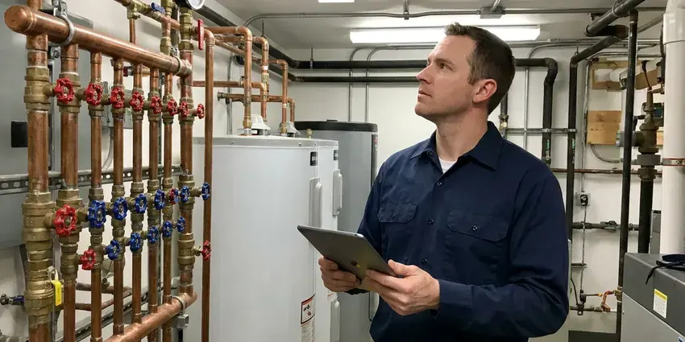

Water Line Repair in Ewa Gentry, HI
From cracked galvanized mains to split PEX under the slab, our licensed plumbers repair water lines in Ewa Gentry, HI with minimal digging.
- Experienced Technicians
- Trenchless Options Available
- Upfront quotes
- Upfront Written Pricing

Broken Water Line? We Dig Smart and Fix It Right in Ewa Gentry, HI.
Call now and a licensed plumber will locate your water line leak with electronic listening gear before anyone picks up a shovel.
Your Go-To for Water Line Repair in Ewa Gentry, HI
HKL Plumbing understands the problems of water line issues in Ewa Gentry, HI. From corrosive soil to shifting foundations, our team is equipped to handle repairs that last, using durable materials suited for Hawaii conditions.
Our expertise includes:
- Trenchless repair methods
- Acoustic and tracer gas leak detection on buried mains
- Durable pipe material replacements

Additional Plumbing Maintenance Services in Ewa Gentry, HI
Our maintenance and specialty plumbing services in Ewa Gentry, HI protect your home year-round and extend the life of every system.




Professional commercial plumbing, Ewa Gentry

Customers
Why Choose HKL Plumbing for Water Line Repair in Ewa Gentry, HI?
Our plumbers carry fittings and pipe for every common service line material on the truck. That means most water line repairs are finished in one visit instead of waiting for a parts run.
- Lasting Materials, We replace failed sections with Type K copper or PEX rated for direct burial.
- Local Knowledge, Our team understands the local plumbing codes and site conditions affecting water lines in Ewa Gentry.
- Quality Materials, Only quality, durable piping and fittings are used for repairs, protecting the longevity of your water line system.
Citywide Coverage
We repair water lines in every neighborhood of Ewa Gentry, from older homes with original galvanized mains to new subdivisions plumbed with PEX. Our trucks are stocked for the pipe sizes and meter setups used by local water providers.
Experienced Team
Our plumbers are highly trained and experienced in water line repair, dealing with everything from minor leaks to major breaks. They stay current on the latest techniques and local regulations.
Safety-First Approach
All repairs follow the plumbing code adopted by your local jurisdiction, including proper burial depth and approved fittings. We pressure test every repaired line and flush it before restoring service.
Trusted Certified Ewa Gentry Plumbing Services Professionals
At HKL Plumbing, we take pride in providing licensed, certified plumbing services throughout Ewa Gentry, HI. Backed by leading industry credentials, our experienced plumbers combine technical skill with genuine customer care. Whether it is repair, installation, or maintenance, we follow strict safety and quality standards to deliver long-lasting results you can trust.
Call Us Now PHCC Plumbing Contractor Recognition
PHCC Plumbing Contractor Recognition Better Business Bureau (BBB) Accreditation
Better Business Bureau (BBB) Accreditation Angi Certified Pro
Angi Certified Pro ISO 9001 Quality Management Certification
ISO 9001 Quality Management CertificationDependable Water Line Repair Services in Ewa Gentry, HI
Commercial Water Line Services in Ewa Gentry, HI
Businesses in Ewa Gentry, HI rely on a steady and dependable water supply, and a damaged water line can lead to serious operational disruptions. HKL Plumbing provides complete commercial water line repair and maintenance services, understanding the demands of commercial plumbing systems. We work quickly and efficiently to minimize downtime, addressing issues like large-diameter pipe leaks, backflow prevention, and complex underground repairs, so your business's water service stays fully functional.

Trenchless Water Line Replacement in Ewa Gentry
If your service line runs under a driveway, pool deck or mature landscaping, trenchless replacement can save a lot of restoration cost. We dig small pits at each end and pull new HDPE or PEX pipe through using a pneumatic boring tool or pipe pulling equipment. The process typically takes one day. You keep your pavers and trees, and the new line carries a lengthy manufacturer warranty.
Emergency Water Line Repair in Ewa Gentry, HI
A burst water line is a true emergency, potentially causing extensive water damage and make your home unlivable. HKL Plumbing offers rapid-response emergency water line repair services across Ewa Gentry, HI. Our plumbers are equipped to handle sudden breaks, providing immediate shut-off and repair to prevent further damage. Don't hesitate to call us anytime, day or night, if you suspect a major water line failure. Quick action is essential to limit the impact of a severe leak.
Underground Leak Detection in Ewa Gentry, HI
Many water line leaks occur underground, making them difficult to detect without specialized equipment. Our technicians use modern acoustic and thermal imaging tools to accurately locate hidden leaks without unnecessary digging. Early detection saves you money on water bills and prevents expensive damage to your foundation. Much of Hawaii sits on volcanic rock and lava, which makes trenching for sewer and water lines slow and sometimes requires special equipment. Once located, we provide a clear repair plan, so the problem is resolved efficiently for your property in Ewa Gentry.
Slab Leak Water Line Repair in Ewa Gentry
Slab leaks, where water lines running beneath your home's concrete foundation leak, are a especially challenging issue. Older homes may still have galvanized steel supply pipes or cast iron drains, both of which corrode faster in a warm, salty, humid environment. These leaks can undermine your foundation, leading to serious structural damage. We use specialized listening devices and camera inspections to locate slab leaks precisely and offer repair options including direct slab penetration, re-routing, or pipe lining. Addressing a slab leak quickly in Ewa Gentry is crucial to prevent extensive, costly foundation damage.
Main Water Line Leak Repair in Ewa Gentry
Most main line leaks show up as a soggy strip of yard, a sudden jump in your water bill or a meter dial that moves with every fixture off. We confirm the leak by isolating the house shutoff and watching the meter. Then we use ground microphones to find the exact spot. A single section is cut out and replaced with repair couplings or a new length of pipe, and the line is pressure tested before backfill.
Trenchless Water Line Repair in Ewa Gentry
For some water line repairs, traditional trenching can be avoided. Trenchless repair methods, like pipe bursting or pipe lining, allow us to fix or replace underground pipes with minimal disruption to your landscaping, driveway, or foundation. This method is often faster and less intrusive than traditional digging, making it a popular choice for homeowners in Ewa Gentry looking to protect their property. We'll check whether your water line issue is a good candidate for trenchless technology.

Underground Water Line Leak Repair in Ewa Gentry
Underground water line leaks are often hard to detect until significant damage has occurred. Common signs include sudden spikes in your water bill, damp spots in your yard, or a clear drop in water pressure. Our team uses acoustic leak detection and ground-penetrating radar to accurately pinpoint these hidden leaks in Ewa Gentry, minimizing the need for extensive excavation. We repair breaks caused by shifting soil, tree root intrusion, or aging pipes, restoring your water service quickly.
Water Line Repair Close to Home in Ewa Gentry, HI
If you're searching for 'water line repair near me' in Ewa Gentry, HI, HKL Plumbing is your local pro. We prioritize fast response times because we know a water line issue can't wait. Our team is always close by, ready to provide professional and efficient service.
We know how local water providers set up meters, curb stops and service connections. That local knowledge helps us tell whose side of the meter the leak is on right away. It also makes permit and inspection steps quicker when a full replacement is needed.
HKL Plumbing at a Glance
- Fully licensed plumbing team covering Ewa Gentry, HI
- Same-day appointments and 24/7 emergency response
- Upfront, flat-rate pricing before work begins
- 4.8-star rated by 529+ Hawaii customers
Ewa Gentry Map
Ewa Gentry Information
- Population
- 25,707
- Area codes
- Local
- Service area
- Ewa Gentry and communities within 40 miles
- Nearby
- Ocean Pointe, Ewa Beach, Kapolei, Waipahu
Much of Hawaii sits on volcanic rock and lava, which makes trenching for sewer and water lines slow and sometimes requires special equipment. Effective water line repair is important in Ewa Gentry, HI because moving ground can put heavy pressure on underground pipes, causing breaks and leaks.
Expert Services
Trust our professionals for reliable HKL Plumbing solutions in Ewa Gentry, HI.
Our Specialized Plumbing Services in Ewa Gentry, HI
At HKL Plumbing, we provide a complete range of plumbing services across Ewa Gentry, HI. From leak detection to full system installations, our team ensures fast, precise, and affordable service for both residential and commercial properties. Explore our core services below:


How Our Water Line Repair Process Works in Ewa Gentry, HI
We follow a clear, step-by-step approach so your water line repair is handled properly and effectively in Ewa Gentry, HI.
Request a Quote
Call HKL Plumbing at (808) 649-6718 to describe your water line issue and schedule a diagnostic visit. We'll gather basic information to prepare our team.
Diagnosis & Plan
Our expert technicians will arrive on-site to perform a thorough inspection, using advanced tools to pinpoint the exact location and cause of the water line problem. We'll then present a clear repair plan and upfront pricing.
Expert Repair
Once approved, our team will complete the repair using the most effective and durable methods, whether it's a simple patch, pipe replacement, or trenchless solution. We ensure all work meets local codes.
Frequently Asked Questions About Water Line Repair in Ewa Gentry
A spot repair on an accessible service line typically runs $350 to $1,500 depending on depth and access. Full replacement from meter to house usually costs $1,800 to $5,500, and trenchless replacement often falls between $3,000 and $7,000. We give you a written price before we start.
Common signs of a broken water line include unusually high water bills, a sudden drop in water pressure, wet spots in your yard or on pavement that don't dry, discolored water, or the sound of running water when no fixtures are in use. For homes on slab foundations, look for cracks in the foundation or warm spots on the floor.
Most standard water line repairs can be completed within a few hours to a full day, depending on the severity and location of the leak. More complex issues, like trenchless pipe replacement or extensive excavation for a main line, might take 1-3 days. We always aim for the quickest, most efficient fix without compromising quality.
Our plumbers are experienced with all common water line materials found in Ewa Gentry, including PEX, copper, PVC, and older galvanized steel pipes. We check the existing material and recommend the best repair or replacement option for durability and compliance with modern standards. We stock parts for all these materials for efficient repairs.
Some rural homes in Hawaii rely on rainwater catchment, which needs good filtration and disinfection to keep tanks and fixtures in safe shape. Much of Hawaii sits on volcanic rock and lava, which makes trenching for sewer and water lines slow and sometimes requires special equipment. Tree roots can also crush or wrap shallow lines, and mineral scale narrows older pipe over time. Aging galvanized pipe is the most common culprit in older homes.
The duration of a water line repair depends on the severity and type of repair. A simple spot repair might take a few hours, while a more extensive replacement, especially if it involves excavation or trenchless methods, could take one to three days. We always work to complete the work efficiently while maintaining high quality.
Many policies do not cover the pipe itself but may cover resulting damage to your home. Some homeowners carry separate service line coverage through their utility or insurer. We provide photos and an itemized invoice to support your claim.
We typically install Type K copper, PEX rated for direct burial or HDPE for trenchless pulls. Each holds up well in most soils when properly bedded. We will recommend the right material based on your soil, line length and budget.
What People Are Saying About Our Plumbing Experts?
Patricia H.
We had a slab leak that two other companies could not find. HKL Plumbing located it in under an hour, explained our options, and the price matched the quote to the dollar.
Slab Leak Repair · Makakilo, HI
Laura S.
I scheduled a water heater replacement, and the team made the process smooth and affordable. The new unit works perfectly, and they cleaned up after completing the job.
Water Heater Replacement · Ocean Pointe, HI
Emily R.
I called HKL Plumbing for plumbing repair, and the technician was fast, polite, and thorough. They explained the problem clearly and fixed it the same day. I will definitely hire them again. Highly recommended!
Plumbing Repair · Waipahu, HI
Mark T.
When our office needed drain cleaning, HKL Plumbing provided quick, reliable service. The plumber arrived on time and made sure every drain flowed perfectly before leaving. Very satisfied.
Drain Cleaning · Royal Kunia, HI
James P.
Our commercial plumbing system had a leak under the sink, and HKL Plumbing handled it professionally. The plumbers arrived quickly and restored everything without disruption to our customers.
Commercial Plumbing · Ocean Pointe, HIRobert G.
The trenchless sewer replacement saved our front yard. They walked us through the camera inspection footage first so we knew exactly what we were paying for.
Sewer Line Replacement · Ewa Beach, HI